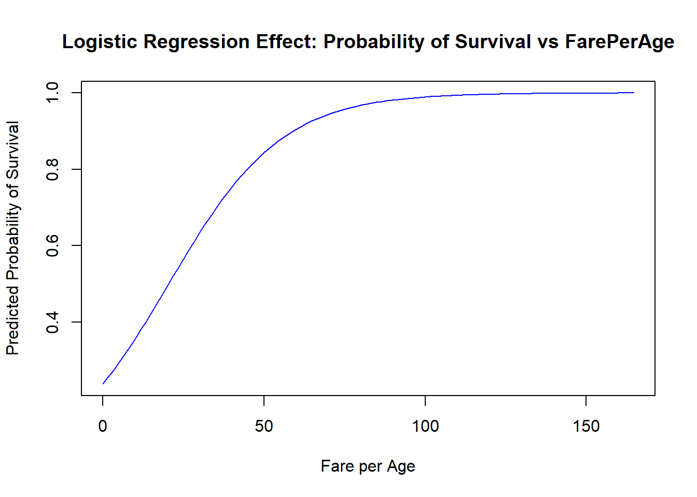
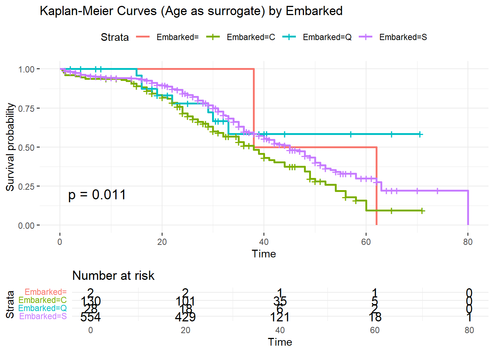
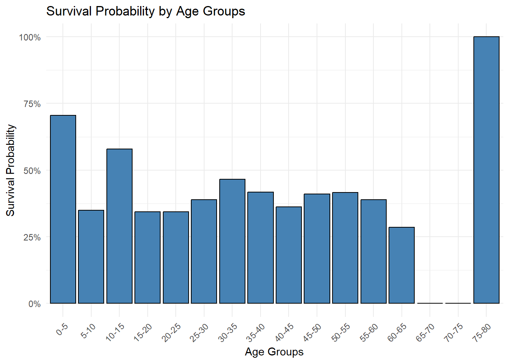
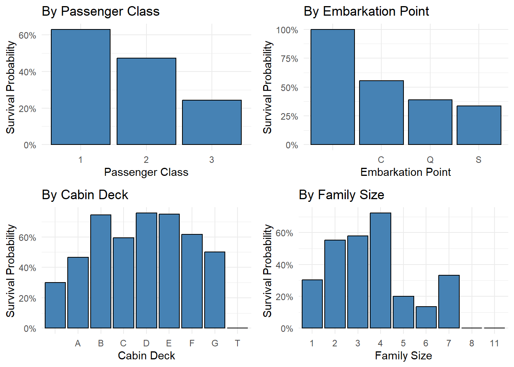

2.5 % 97.5 %
(Intercept) 2.693116e-36 NA
EmbarkedC NA 3.449370e+36
EmbarkedQ NA 1.784065e+36
EmbarkedS NA 2.105507e+36
FarePerAge 1.018352e+00 1.108769e+00
CabinLocationB 4.179260e-01 6.975283e+00
CabinLocationC 1.923169e-01 2.912960e+00
CabinLocationD 4.054581e-01 7.778211e+00
CabinLocationE 5.049584e-01 9.804868e+00
CabinLocationF 2.330402e-01 8.468545e+00
CabinLocationG 5.063128e-02 6.648300e+00
CabinLocationT NA 6.110133e+71
CabinLocationUnknown 1.120350e-01 1.363418e+00
FamilySize 6.209936e-01 9.052443e-01
IsAlone1 1.946926e-01 5.280384e-01
# Create a logistic regression effect plot for FarePerAge# We predict probability across a range of FarePerAge values while holding other variables constant (using median or reference levels)fare_range <-seq(min(titanic_df$FarePerAge, na.rm =TRUE), max(titanic_df$FarePerAge, na.rm =TRUE), length.out =100)# use typical values: Embarked = most common, CabinLocation = most common, FamilySize = median, IsAlone = most commoncommon_embarked <-levels(titanic_df$Embarked)[which.max(table(titanic_df$Embarked))]common_cabin <-names(which.max(table(titanic_df$CabinLocation)))median_family <-median(titanic_df$FamilySize, na.rm =TRUE)common_alone <-names(which.max(table(titanic_df$IsAlone)))test_data <-data.frame(FarePerAge = fare_range,Embarked =factor(common_embarked, levels=levels(titanic_df$Embarked)),CabinLocation =factor(common_cabin, levels=levels(titanic_df$CabinLocation)),FamilySize = median_family,IsAlone =factor(common_alone, levels=levels(titanic_df$IsAlone)))test_data$predicted_prob <-predict(logit_model, newdata = test_data, type ='response')# Plot the logistic regression effect for FarePerAgeplot(test_data$FarePerAge, test_data$predicted_prob, type='l', col='blue',main='Logistic Regression Effect: Probability of Survival vs FarePerAge',xlab='Fare per Age', ylab='Predicted Probability of Survival')# Kaplan-Meier Curves# Note: The Titanic dataset does not have an explicit time-to-event variable. # We use Age as a surrogate for time for demonstration purposes.# Create a Surv object with Age as time and Survived as event indicator.# Warning: This use is not a true survival analysis based on follow-up time.km_fit_embarked <-survfit(Surv(Age, Survived) ~ Embarked, data=titanic_df)# Plot Kaplan-Meier curves by Embarked categorykm_plot <-ggsurvplot(km_fit_embarked, data=titanic_df, risk.table =TRUE, pval =TRUE, ggtheme =theme_minimal(),title ='Kaplan-Meier Curves (Age as surrogate) by Embarked')print(km_plot)


# Detailed Survival Rates by each Category:# For Embarked:survival_rates_embarked <-aggregate(Survived ~ Embarked, data=titanic_df, FUN=function(x){sum(x, na.rm =TRUE)/length(x)})print(survival_rates_embarked)
Embarked Survived
1 1.0000000
2 C 0.5535714
3 Q 0.3896104
4 S 0.3369565
CabinLocation Survived
1 A 0.4666667
2 B 0.7446809
3 C 0.5932203
4 D 0.7575758
5 E 0.7500000
6 F 0.6153846
7 G 0.5000000
8 T 0.0000000
9 Unknown 0.2998544
# For Family Size:survival_rates_family <-aggregate(Survived ~ FamilySize, data=titanic_df, FUN=function(x){sum(x, na.rm =TRUE)/length(x)})print(survival_rates_family)
# A tibble: 102 × 11
Sex Pclass Embarked CabinDeck FamilySize IsAlone Count Age Fare
<fct> <fct> <fct> <fct> <dbl> <fct> <int> <dbl> <dbl>
1 female 1 S E 2 0 3 33 55
2 female 1 C B 2 0 4 31.5 74.5
3 female 1 C E 3 0 2 39.5 109.
4 female 1 C D 2 0 6 50.5 78.3
5 female 1 C E 1 1 2 35.5 95.7
6 female 1 S B 1 1 6 29.5 86.5
7 female 1 S B 2 0 3 17 211.
8 female 1 C B 3 0 1 22 49.5
9 female 1 S D 2 0 3 51 78.0
10 female 1 S C 2 0 5 35 83.5
# ℹ 92 more rows
# ℹ 2 more variables: PassengerIds <chr>, survival_prob <dbl>
library(dplyr)library(ggplot2)titanic_df$Survived <-as.numeric(as.character(titanic_df$Survived))age_survival <- titanic_df %>%filter(!is.na(Age), !is.na(Survived)) %>%mutate(age_group =cut(Age, breaks =seq(0, 80, by =5),labels =paste(seq(0, 75, by =5), seq(5, 80, by =5),sep ="-"))) %>%group_by(age_group) %>%summarise(survival_prob =mean(Survived))ggplot(age_survival, aes(x = age_group, y = survival_prob)) +geom_col(fill ="steelblue", color ="black") +labs(x ="Age Groups",y ="Survival Probability",title ="Survival Probability by Age Groups") +theme_minimal() +theme(axis.text.x =element_text(angle =45, hjust =1)) +scale_y_continuous(labels = scales::percent_format(accuracy =1))

library(dplyr)library(ggplot2)library(gridExtra)
Attaching package: 'gridExtra'
The following object is masked from 'package:randomForest':
combine
The following object is masked from 'package:dplyr':
combine
# Passenger Classpclass_survival <- titanic_df %>%filter(!is.na(Survived)) %>%mutate(Survived =as.numeric(as.character(Survived))) %>%group_by(Pclass) %>%summarise(survival_prob =mean(Survived))p1 <-ggplot(pclass_survival, aes(x =factor(Pclass), y = survival_prob)) +geom_col(fill ="steelblue", color ="black") +labs(x ="Passenger Class", y ="Survival Probability", title ="By Passenger Class") +theme_minimal() +scale_y_continuous(labels = scales::percent_format(accuracy =1))# Embarkation Pointembarked_survival <- titanic_df %>%filter(!is.na(Survived), !is.na(Embarked)) %>%mutate(Survived =as.numeric(as.character(Survived))) %>%group_by(Embarked) %>%summarise(survival_prob =mean(Survived))p2 <-ggplot(embarked_survival, aes(x = Embarked, y = survival_prob)) +geom_col(fill ="steelblue", color ="black") +labs(x ="Embarkation Point", y ="Survival Probability", title ="By Embarkation Point") +theme_minimal() +scale_y_continuous(labels = scales::percent_format(accuracy =1))# Cabin Decktitanic_df$Deck <-substr(titanic_df$Cabin, 1, 1)deck_survival <- titanic_df %>%filter(!is.na(Survived), !is.na(Deck)) %>%mutate(Survived =as.numeric(as.character(Survived))) %>%group_by(Deck) %>%summarise(survival_prob =mean(Survived))p3 <-ggplot(deck_survival, aes(x = Deck, y = survival_prob)) +geom_col(fill ="steelblue", color ="black") +labs(x ="Cabin Deck", y ="Survival Probability", title ="By Cabin Deck") +theme_minimal() +scale_y_continuous(labels = scales::percent_format(accuracy =1))# Family Sizetitanic_df$FamilySize <- titanic_df$SibSp + titanic_df$Parch +1family_survival <- titanic_df %>%filter(!is.na(Survived)) %>%mutate(Survived =as.numeric(as.character(Survived))) %>%group_by(FamilySize) %>%summarise(survival_prob =mean(Survived))p4 <-ggplot(family_survival, aes(x =factor(FamilySize), y = survival_prob)) +geom_col(fill ="steelblue", color ="black") +labs(x ="Family Size", y ="Survival Probability", title ="By Family Size") +theme_minimal() +scale_y_continuous(labels = scales::percent_format(accuracy =1))# Arrange all plots in a gridgrid.arrange(p1, p2, p3, p4, ncol =2)

The plots show:
By Passenger Class: First class passengers had the highest survival rate, followed by second class, with third class having the lowest survival probability
By Embarkation Point: Passengers who embarked from ‘C’ (Cherbourg) had the highest survival rate, followed by ‘Q’ (Queenstown), and ‘S’ (Southampton)
By Cabin Deck: There are clear differences in survival rates between decks, with some upper decks having higher survival probabilities
By Family Size: Passengers traveling in small to medium-sized family groups (2-4 members) generally had higher survival probabilities than those traveling alone or in very large family groups